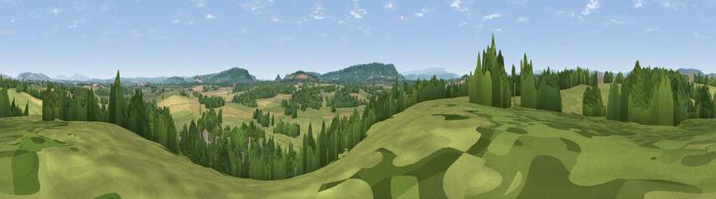

Viewpoint near Dilwyn
#31384 in England · top 82% of its area beats it · near DilwynWhere it is
The exact computed spot (SO 41225 54625). Click the marker for map links.
The view, rendered

A 360° render of this exact spot computed from the terrain model, tree cover and land cover — summer colours, afternoon light, calibrated against photographs of famous viewpoints. Real trees, hedges and buildings will differ in detail.
The panorama
Grey silhouette: terrain skyline in each direction (720 bearings, Earth curvature and refraction included). Dashed green: skyline with trees (+15 m) and buildings (+8 m) as obstacles. Blue strip: how far the ground is visible on each bearing.
Where the view opens
Wedge length = distance to the farthest visible ground on that bearing (vegetation-aware). Rings at 10, 25 and 50 km.
What fills the view
48% grassland · 26% woodland · 24% cropland · 2% built-up
Angular shares of the visible panorama (visual magnitude), not map area. Landscape diversity 0.49 (0–1 Shannon).
Key numbers
More beautiful places nearby
The staircase of upgrades: each row has a higher view potential than everything closer. Driving times are estimates from straight-line distance, calibrated against real road routing — check an actual route before setting out.
| Place | Direction | Drive | Score |
|---|---|---|---|
| Chadnor Hill | SSE · 4 km | ~9 min | 69.8 |
| Viewpoint near Westhope | ESE · 5 km | ~11 min | 77.0 |
| Viewpoint near Weobley | SSW · 5 km | ~12 min | 79.7 |
| Rushock Hill | WNW · 13 km | ~24 min | 80.2 |
| Viewpoint near Leinthall Starkes | N · 15 km | ~26 min | 80.3 |
| Merbach Hill | SW · 15 km | ~26 min | 81.1 |
| Gatley Hill | NNE · 15 km | ~27 min | 82.6 |
| Titterstone Clee | NE · 29 km | ~46 min | 83.8 |
52.18672, -2.86113 · source: screening · position refined by local search. Computed location — check access rights before visiting.